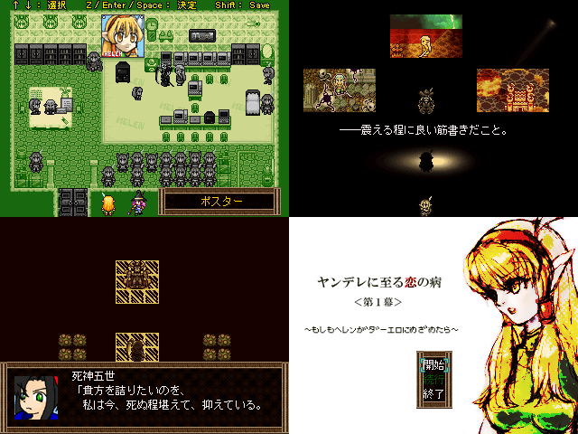

| No,092 【ヤンデレに至る恋の病＜第１幕＞～もしもヘレンがダーエロに目覚めたら～】 |
| ダウンロード（3.22MB） 修正ファイル（147KB） 2007/1/3 22:20 |
 |
| 【ＨＮ】 暗黒座標 【ジャンル】 肝心な所は次回に続いてしまったgdgdな見るゲ 【コメント】 やあ（´・ω・｀) ようこそ、エターナルエリアの一角へ。
このSSはやぶれかぶれだから、まず眺めて落ち着いて欲しい。 うん、「遅参」なんだ。済まない。
古参者の顔もって言うしね、謝って許してもらおうとも思っていない。 でも、この幻のNo.を見たとき、君は、きっと言葉では言い表せない
「締切過ぎたのにどこまでもtktk止まらなくても諦めない想い、略して真性紅白が終わる地獄」 みたいなものを感じてくれたと思う。 寒々としたエターナルの空気の中で、そういう気持ちを忘れないで欲しい、 そう思って このksgを出したんだ。 ダウンドード出来るのはこの一品だけなんだ。
すまない。 もしものもしものもしものもしも。
後は、自分の目で確かめてくれ！
エターナラーはクールに去るぜ
注）サポートはいたしますとエターナラーが申しておりました
|
| 【管理人コメント】 新年早々、作品が投下されるとはめでてえｗｗｗ ヘレンがダーエロに目覚めるなんて俺は・・俺は許さんぞ！ |